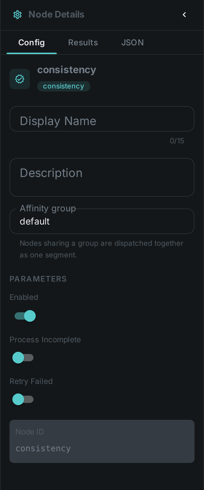
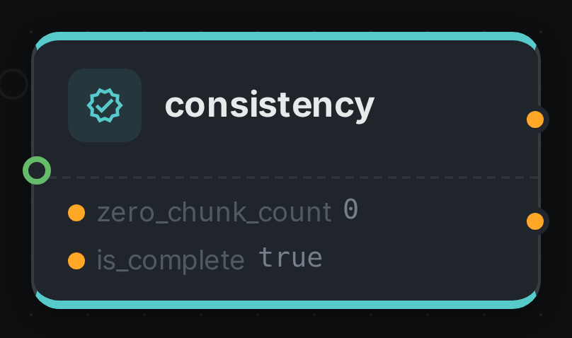

The consistency node checks that a media file is complete and not corrupt by counting zero chunks (runs of empty bytes) that indicate a truncated or partially-downloaded file. Running it early lets a pipeline skip expensive processing on broken media.
Kind |
|
Applies to |
Video, Audio |
Input ports |
|
Output ports |
|
Requirements |
CPU only. Reads the file bytes from storage. |
Persists to |
|
Connect is_complete to a downstream node that should not waste time on a broken file — for example
Thumbnail, whose optional is_complete port makes it skip incomplete videos.
Configuration

No custom options beyond the common node flags.
Seeing it run
Turn on Debug Mode and every node keeps what it produced, on the
card itself. Below is a real run of this node over pexels-jack-sparrow-5977265.mp4.

The strip on the card lists what each output port carried — zero_chunk_count, is_complete.
Use Cases
-
Ingest gatekeeping — detect truncated or corrupt downloads before spending time on hashing, transcoding or ML nodes.
-
Data-quality reporting — flag incomplete assets in a library for re-fetch.